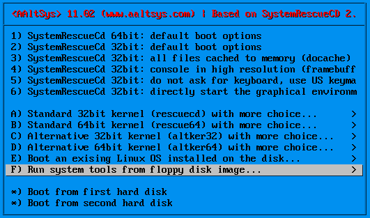
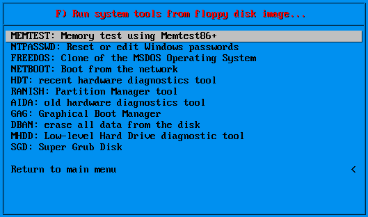

Note
This documentation is extracted from the System Rescue CD documentation found on line at http://www.sysresccd.org/Online-Manual-EN. Please refer to the original documentation there.
SystemRescueCd allows you to do many administration tasks by booting from virtual floppy disks. Virtual floppy booting is comparable to starting the computer from a physical floppy disk, in that the hard drive is accessible but not active. This permits many repair functions such as system backup, password recovery, data repair, and hardware testing.
To boot from a virtual floppy, first start the computer from the SysRescueCD to see the first menu, as shown below.
From the SysRescueCD main menu, select item F) to see a list of available virtual boot images:
Select an item from the list to boot an image which will run the corresponding program.
MEMTEST: Use MemTest+ to test system memory for damage.
NTPASSWD: Use NT Password and Registry editor to change system information in Windows installations. Of most interest is the ability to change the password of a user account. Now, you will not have to reinstall Windows if you forget the password of the administrator account, as you can edit the password with this utility. This program also allows you to edit the Windows registry, even when Windows is installed on an NTFS disk.
FREEDOS: To start a DOS session, select FreeDos from the menu. FreeDos is a free operating system compatible with MS-DOS. It allows you to run DOS programs such as Partition Magic or Drive Image without an MS-DOS license.
NETBOOT: Select Network Booting to boot from a network image for computers which do not support PXE, or which are not set to enable PXE booting in the BIOS.
HDT: Hardware Diagnostics Tool is an advanced diagnostic system program which will detect your computer hardware, such as the processor, chipset, mainboard, network card, and so forth. It is very useful, for example, when you want to download a driver and you don’‘t know which one to take.
ranish: The Ranish Partition Manager is a low level partition manager with power, unlike Fdisk from Microsoft.
AIDA: Advanced Information Diagnostics Tool is a diagnostic program similar to HDT. While superceded, it is still in common use.
GAG: Graphical-Boot-Manager is a working boot manager similar to Lilo, Grub, or Boot-Magic.
DBAN: Use Darik’’s Boot and Nuke to destroy all data on a computer’’s drives. For example, use Dban before selling or giving away a computer.
Warning
Dban is intended to produce irretrievable data loss.
MHDD: Use Hard Drive Diagnostics to perform low-level diagnostics on a hard drive.
SGD: Use the Super Grub Disk bootloader to identify and manage bootable devices.